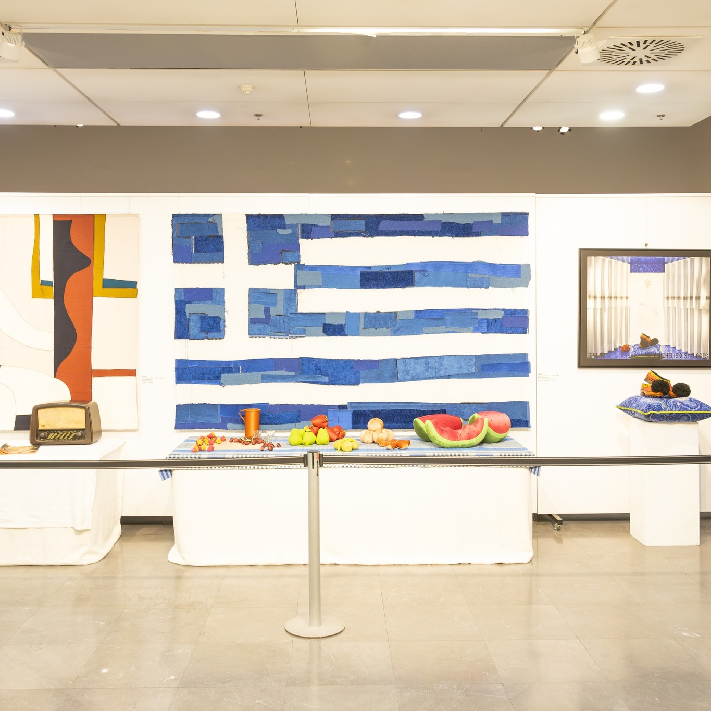
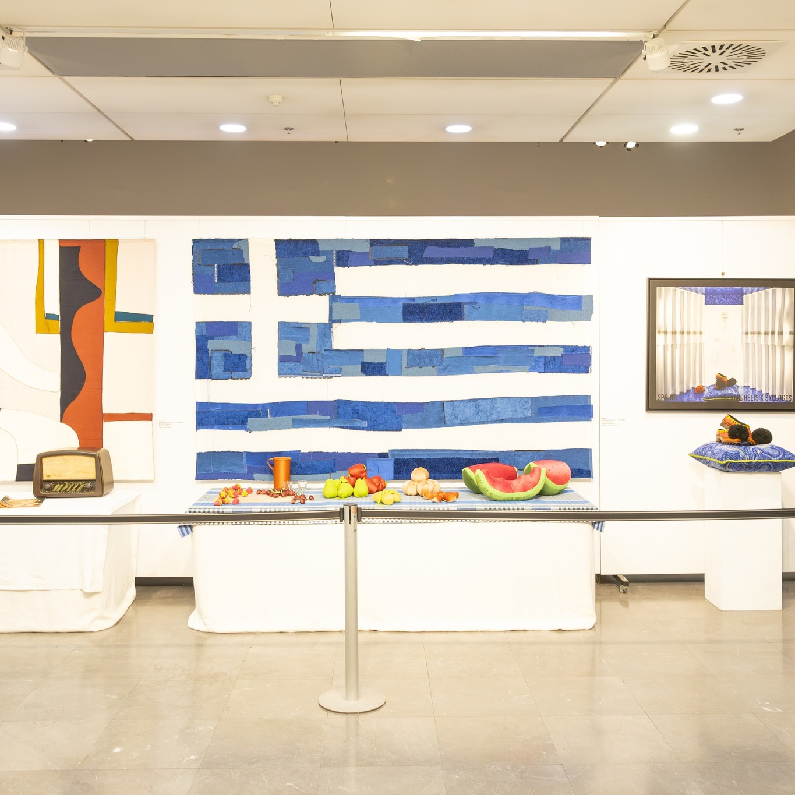
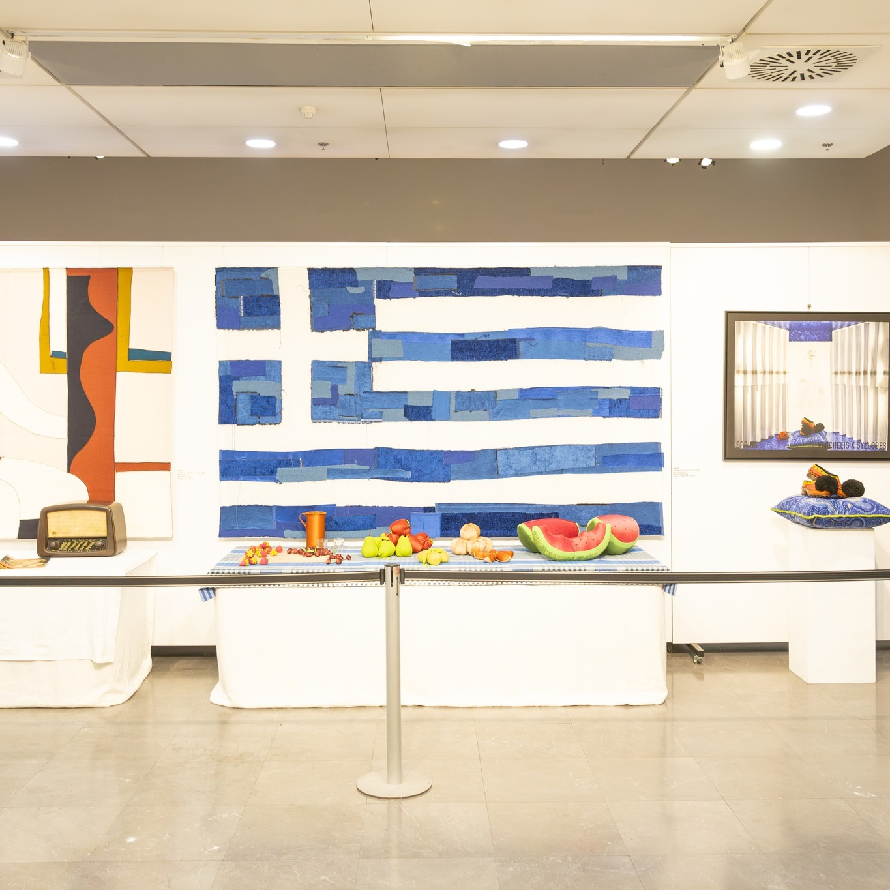

☰
Α.Μ.Κ.Ε. ΔΙΕΘΝΗΣ ΔΡΑΣΗ
-
INTERACTION
Σύγχρονη Πολιτιστική Παρουσία με Παγκόσμια Προοπτική
ΑΡΧΙΚΗ
ΣΧΕΤΙΚΑ
ΔΡΑΣΕΙΣ
▼
Πολιτισμός
Τουρισμός
Περιβάλλον
Εκπαίδευση
Τεχνολογία
ΣΥΜΜΕΤΟΧΗ
▼
Γίνε Εθελοντής
Γίνε Μέλος
ΕΠΙΚΟΙΝΩΝΙΑ

❮
❯
Ενίσχυση και προβολή του σύγχρονου ελληνικού πολιτισμού Παγκοσμίως
Σύνδεση του τουρισμού με την προβολή του σύγχρονου πολιτισμού
Προβολή ενός σύγχρονου "πολιτιστικού" διάστασης της περιβαλλοντικής συνείδησης
Σύνδεση της εκπαίδευσης με την προβολή του σύγχρονου ελληνικού πνεύματος
Ένταξη της τεχνολογίας στην ευρύτερη έννοια του σύγχρονου πολιτισμού
Δράσεις
Πολιτισμός
Τουρισμός
Περιβάλλον
Εκπαίδευση
Τεχνολογία
Συμμετοχές σε Projects
Διεθνείς Συνεργασίες
Εκδηλώσεις
Πολιτιστικά Προγράμματα
Συνεργάτες - Υποστηρικτές


 
